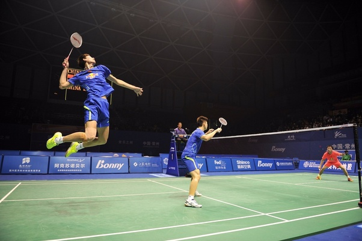
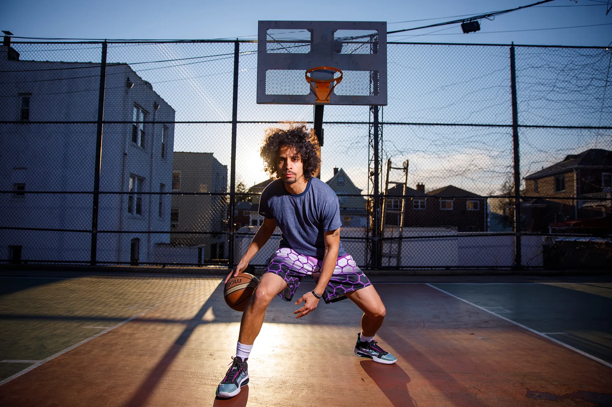

Club Volleyball Nights
Dive into the thrill of the game at our Club Volleyball Nights! Join us for an exhilarating evening of spikes, sets, and serves as we transform our venue into a volleyball haven. Whether you're a seasoned player or a casual enthusiast, our Club Volleyball Nights are the perfect way to bump up the excitement! Grab your friends and hit the courts for some friendly matches. All skill levels welcome! Sharpen your skills with tips and guidance from coaches. Immerse yourself in the vibrant energy of a community passionate. Keep an eye out for tournaments!

Club Shuttle Smash
Welcome to Club Shuttle Smash! Join us in the exhilarating world of racquets and shuttlecocks, where passion meets precision for an unmatched badminton experience. Our club boasts top-notch badminton courts equipped with professional-grade flooring, ensuring a seamless playing surface for your best shots. Forge new connections and indulge in the camaraderie of fellow badminton enthusiasts. Beyond the court is a hub of social activity. Join us for themed game nights, friendly tournaments, and celebrations that bring our badminton community together.

Basketball Club
Dribble into the excitement at our club, where the love for basketball takes center court! Join us for thrilling hoops action, camaraderie, and the adrenaline rush that comes with every slam dunk. Whether you're a seasoned baller or just looking to shoot some hoops for fun, our basketball club welcomes players of all skill levels. Get ready for fast-paced games and a slammin' good time on the court. Bring your A-game to the court and let the basketball fever take over. Join us where dribbles and swishes echo in the air, and the spirit of the game unites us all!
Chess Club
Checkmate your boredom and join the intellectual excitement at our Chess Club! Our club is the perfect place to sharpen your skills, make new friends, and engage in the timeless game of kings and queens. Join us for a checkered adventure where brains meet brilliance, and every game is a strategic masterpiece. Check in with our club where every move is a step towards victory!